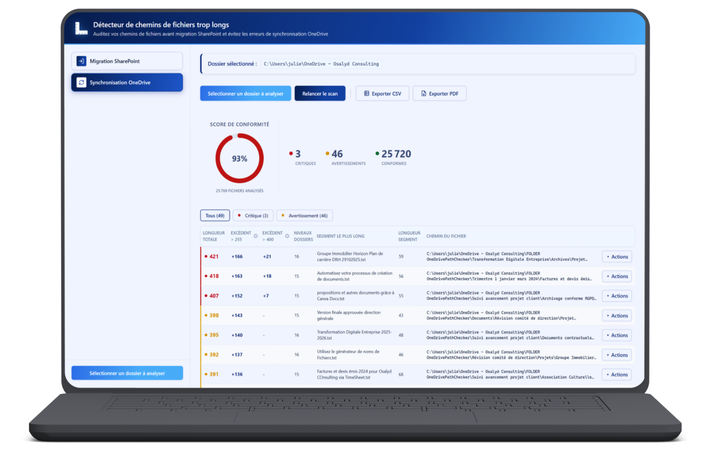

Détecteur de chemins de fichiers trop longs
SharePoint & OneDrive
Auditez vos chemins de fichiers avant migration SharePoint et évitez les erreurs de synchronisation OneDrive.
0%
Local
Ø
Installation
Multi-sources
Local · Réseau · OneDrive

